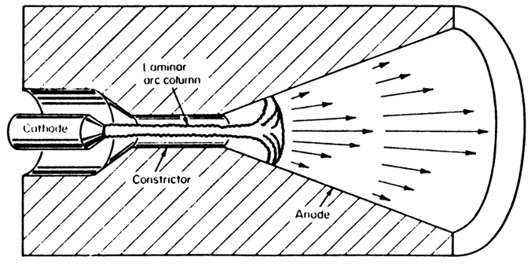
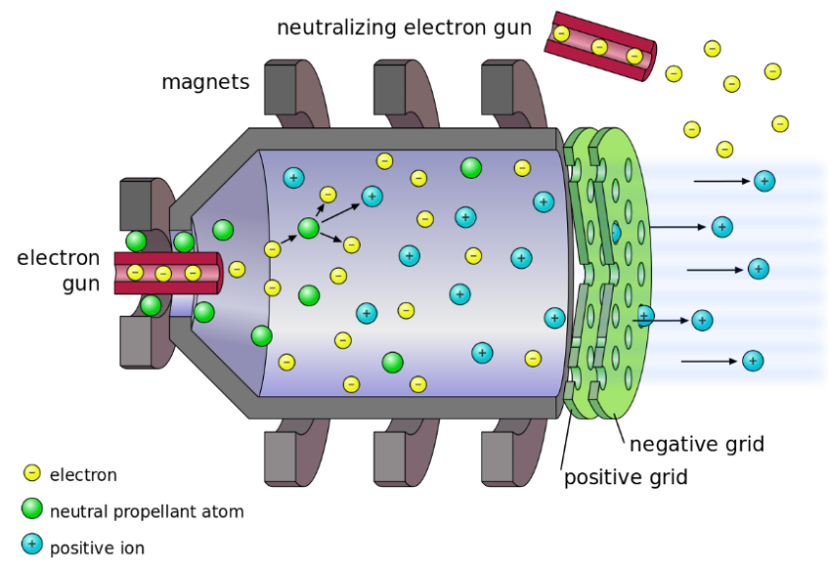
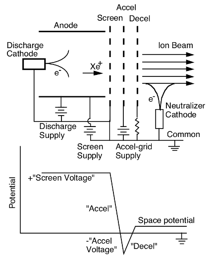
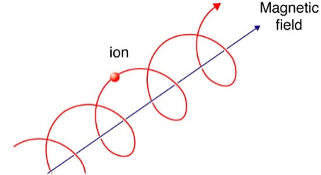

Electric Propulsion
17 May 2021Electric propulsion (EP) is, you guessed it, all about electric propulsion. This includes: ion thrusters, hall thrusters, resistojets, arcjets, and electrosprays.
Technically speaking, anything battery powered is also frequently called electric propulsion, but the underlying mechanism of thrust generation in these cases is often a propeller, and that’s certainly an aerodynamics problem.
Also worth mentioning while we’re here: propulsion systems are never independent of the entire vehicle. It turns out, the power/fuel demand greatly impacts the design. Sizing appropriate solar arrays for an EP spacecraft, or sizing fuel tanks for a rocket are challenges in their own right, so we’ll limit out scope in this post to analyzing thruster performance only.
Thrust to Power Ratio
Applicable to all EP systems. Note that as Isp improves, the thrust per unit power decreases. In the limit of very high Isp, the system is very efficient with propellant, but there is also no thrust being generated.
\[\frac{T}{P}=\frac{2\eta}{U_{ex}}\]Thrust
Derived from a simple statement of conservation of momentum. \(T=\ \dot{m}U_{ex}\)
Specific Impulse
The specific impulse is defined with the following equation. In practice, the Isp is found not by measuring exhaust velocity, but rather by measuring thrust and flow rate.
\[I_{sp}=\frac{T}{\dot{m}g_o}=\frac{U_{ex}}{g_o}\]Time of Flight
Recall that the rocket equation is expressed as: \(∆V=U_{exhaust}\log{m_initial/m_final}\)
Solving the above in terms of the mass of propellent (the difference between the final and initial mass) we get the following equation:
\[m_{propellent}=m_{final}\ (e∆VUex-1)\]The thrust time will be equal to the mass of propellent divided by the mass flow rate. The mass flow rate can be expressed in terms of the thrust and exhaust velocity.
\[\dot{m}U_{ex}=T\] \[\Delta t=\ \frac{m_{initial}U_{ex}}{T}e∆VUex-1\]Note that for electric propulsion systems, thrust scales directly with the power input, according to the following equation:
\[\frac{T}{P}=\frac{2\eta}{U_{ex}}\]Thus, the time of flight equation becomes:
\[∆t= (mpayload+αP)Uex22ηPe∆VUex-1\]Where α is defined as the power density, in units of [weight/power]. We see that thrust time trades directly with power input. For a known thrust time and power, there is an optimum Isp which will minimize launch mass. This is because at low specific impulse, there is a large propellant penalty, but at high specific impulse, there is a large power system mass penalty.
\[m_{initial}=\frac{2\Delta t\eta m_{pl}e^{\Delta V/U}}{2\Delta t\eta+\alpha U^2\left(1-e^{\Delta V/U}\right)}\]Resistojets
As the name implies, this type of thruster uses a resistive heating element to add energy to a propellent, which is then expanded through a nozzle. Through an energy balance, we can find an expression for the thrust output. Note the efficiency terms.
\[\frac{1}{2}\frac{T}{\dot{m}}=\eta P_{in}\] \[\frac{T^2}{P_{in}}=2\eta\dot{m}\] \[\eta=\eta_f\eta_n\eta_h\eta_d\]The power going into the propellant directly goes into raising the enthalpy of the propellant. We note here that enthalpy is a function of the temperature, and in most scenarios, is just equal to the specific heat times the temperature.
\[\eta_hP_{in}=\dot{m}h\left(T_c\right)\] \[h=c_pT\]Using all the above relationship, we can express the exhaust velocity as a function of the chamber temperature and specific heat of the gas.
\[U_{ex}=\sqrt{2c_pT_c\eta_f\eta_n\eta_d}\]Frozen Flow Efficiency
This efficiency term is a measure of how well the internal energy of the gas is converted into directed potential energy. In an ideal case, he would be equal to zero, indicating that 100% of the internal energy has been converted into kinetic energy. In reality, not all the energy can be recovered. In EP systems particularly, dissociation of the propellant due to high temperatures can often lead to high frozen flow losses. (c) refers to the enthalpy in the chamber, and (e) refers to the enthalpy at the exit plane.
\[\eta_f=\frac{h_c-h_e}{h_c}\]To improve the frozen flow efficiency, one can:
- Increase length of the nozzle (increased heat loss to the walls generally outweighs improved frozen flow efficiency.
- Increase pressure (although this increases engine mass)
- Gases with lower specific heat have better recombination, at the expense of lower enthalpy.
Heater Efficiency
A measure of how much power input to the heating chamber is actually used towards raising the temperature of the propellant.
\[\eta_h=\frac{heat\ added\ to\ propellant}{power\ supplied}\]Divergence Efficiency
Decreased effective thrust due to radial velocity component of exhaust plume.
\[\eta_D={cos}^2\theta=\left[\frac{\int{\cos(\theta)d\dot{m}}}{\int{d\dot{m}}}\right]^2\]Nozzle Efficiency
Viscous and thermal losses of propellant internal energy to the nozzle and chamber walls. Q dot here is the rate of energy loss to the walls.
\[\eta_n=\frac{h_c-h_e-\frac{\dot{Q}}{\dot{m}}}{h_c-h_e}\]Enthalpy
The specific enthalpy scales with relation to the available energy storage modes, including translational, vibrational, rotational, and dissociative modes. (m) is the molecule mass of a propellent molecule. We’ve assumed that no ionization occurs.
\[h=\ \frac{k_bT}{m}\left[\frac{5}{2}\left(2-\alpha_2\right)+\beta_r\alpha_2+\beta_r\alpha_2+\frac{(1-\alpha_2)\varepsilon_D}{k_bT}\right]\] \[\alpha_2+\frac{1}{2}\alpha_1=1\] \[\alpha_2=fraction\ of\ molecules\ not\ dissociated\] \[\alpha_1=2 * fraction\ of\ molecules\ that\ have\ dissociated\] \[\varepsilon_D=dissociation\ energy\] \[k_b=boltzman\ constant\] \[\beta_r=percent\ of\ molecules\ which\ have\ this\ energy\ mode\]Note that for monoatomic molecules, there cannot be rotational or vibrational modes of energy storage. Thus, the enthalpy for a monoatomic molecule reduces to:
\[h=\ \frac{k_bT}{m}\left[\frac{5}{2}\right]\]Important result is that dissociation increases entropy, but only if molecules can recombine. If the nozzle length is too short, some dissociated molecules do not recombine to release usable energy in time before they are expelled out the nozzle.
Arcjets
Similar in concept to resistojets, but the propellant acts like a resistor. A typical Arcjets layout is shown below:

The power absorbed by the gas is a function of its resistance and the current passed through it. The resistance can be found with the following equations:
\[R=\eta\left(\frac{L}{A}\right)=\frac{m_eV_c}{n_eq^2}\left(\frac{L}{A}\right)\] \[V_c=\ V_{Te}n_n\sigma\] \[V_{Te}=\sqrt{\frac{k_bT_e}{m_e}}\] \[\lambda=\frac{1}{n_n\sigma}\]Term Definitions:
- L – length of the chamber
- A – nozzle throat area
- Vc – electron/neutral collision frequency
- VTe – thermal velocity of electrons
- me – mass of an electron
- σ – cross section of molecule (πr2)
- ne – electron density
- nn – neutral density
- q – fundamental charge
- kb – Boltzmann constant
Arcjets are still limited in efficiency by the material at the wall. There is however, a significant temperature drop-off from the centerline to the wall, which can be expressed with the following differential equation (where K is the thermal conductivity [W/Km]):
\[\left(\frac{I}{A}\right)^2\eta=-\frac{1}{r}\frac{\partial}{\partial r}\left[rK\frac{dT}{dr}\right]\]Convection, and radiation have been ignored in the above relationship. It has also assumed that the power into the propellant has been evenly distributed throughout the volume.
Thus, the relationship of exhaust velocity to Pin for an arcjet can be expressed as:
\[\frac{1}{2}\dot{m}{U_{ex}}^2=\eta\int\rho\left(\vec{u}\bullet\hat{n}\right)h\left(T\right)dA<\eta h(T_c)\dot{m}\]Where \( T_c \) refers to the temperature long the centerline.
Derivation of Gas Resistivity
Begin by assuming some electric field, spanning some gap populated with neutral molecules. The acceleration of electrons in that field can be expressed as:
\[m_e\frac{dV}{dT}=-q\vec{E}\]In between collisions with the neutrals, the electron is accelerated by the electric field. The increase in velocity is found by integrating the above equation. In this case, Δt is the time in between collisions.
\[\vec{V_f}=-\frac{qE}{m_e}∆t+Vi\]We assume that velocity added by the electric field is negligible compared to the thermal velocity of electrons, which allows us to write:
\[∆t=1Vc≅λVTe\]The average velocity of electrons in the gap is then:
\[Average\ V_f=\frac{1}{N}\sum{-\frac{qE\Delta t}{m_e}}+\frac{1}{N}\sum V_i=-\frac{qE}{m_eV_c}\]Gridded Ion Thruster
These thrusters no longer rely on heating of a propellant. Instead, ions are directly accelerated through an electrostatic potential. Note that like a thermal system, kinetic energy of the propellant increase as the potential energy goes down. In this case, potential energy is in the form of an electrostatic potential.
\[\frac{1}{2}mU^2=q(V_{in}-V_{out})\] \[U_{ex}=\sqrt{\frac{2q}{M}V_o}\] \[T=\dot{m}U_{ex}=\frac{I_B}{q}M_{Xe}\sqrt{\frac{2q}{M_{Xe}}V_o}\]There are few important constraints that affect how we want to design the electric potential profile of the thruster.
- We want a large potential drop from the positive grid to the negative grid to accelerate our ions.
- We want to attract positively charged ions to the positive grid while repelling electrons. This is achieved by keeping the chamber at a slightly higher potential than the positive grid.
- We do not want electrons in the exhaust plume to be pulled back into the chamber, so we offset the entire thruster, (i.e. the negative grid is at a lower potential than the exhaust, thus repelling electrons).
In general, there are three important components to a gridded ion thruster
- Accelerator Grid (A positive and negative grid, sometimes a third one)
- Ion Production chamber
- Neutralizing Electron Gun
An electrical diagram is shown below, along with a map of the electric potential throughout the thruster. A minimum of 3 independent power supplies are required in order to achieve the desired mapping of potentials.

The efficiency of a gridded ion system can be calculated with an energy balance as follows:
\[\eta=\frac{T^2}{2\dot{m}P_{in}}\] \[\eta=\frac{M}{\dot{m}}\frac{V_B}{q}\frac{I_B^2{cos}^2\theta}{P_D+V_BI_B}=\eta_D\eta_m\eta_e\] \[\eta_D={cos}^2\theta\] \[\eta_m=\frac{M}{\dot{m}}\frac{I_B}{q}\] \[\eta_E=\frac{V_BI_B}{P_D+V_BI_B}\]Where, B refers to beam and D refers to the discharge. The three main types of efficiency are the discharge efficiency, mass utilization efficiency (how much of mass flowrate is successfully accelerated), and the electrical efficiency (power put into the ionization and constraining ions vs energy of successfully accelerated ions).

Charge Exchange Event
An event in which an accelerated ion impacts a neutral molecule in the exhaust plume. The decelerated ion is drawn back into to the potential well that was preventing electron backflow. This leads to sputtering and degrading of the negative grid.
Solution is to install a third grid, which creates a positive electric potential which repels ions. It unfortunately does attract electrons, but electrons are stopped by the negative grid from passing further into the thruster.
Space Charge Limited Thrust Density
There is a limit to the amount of current which can be passed through the grids before the current itself cancels the electric field. This limit is defined with the Child-Langmuir Law.
\[J=\frac{4\varepsilon_o}{9}\sqrt{\frac{2q}{m_{Xe}}}\frac{V^{3/2}}{d^2}\]This is the primary limiter of thrust density for all Gridded Ion Thrusters.
Quasi-Neutrality
Within the plasma chamber of a gridded ion thruster, quasi-neutrality is maintained (i.e. the electron density and ion density is the same). This is no longer true between the grids (by design since electrons are not allowed to enter). Quasi-neutrality is also maintained everywhere within a Hall thruster. This idea is important because space charge effects cannot apply to a quasi-neutral plasma.
Hall Thrusters
Hall thrusters are a form of electromagnetic propulsion which rely on the combination of an electric field and magnetic field. They have higher thrust densities than gridded ion thrusters, but lower efficiency and specific impulse.
Propellent, typically Xenon, is injected into the chamber. They collide with electrons caught in the hall drift and are ionized. The ions are then accelerated out by the electric field.
Although the device is an electrostatic accelerator, thrust is actually produced magnetically through the hall current. The hall current generates a magnetic field, which interacts with the current flowing in the solenoids (which generate the magnetic field that causes the hall current in the first place) to generate thrust. So, while the thruster can be analyzed with momentum conservation, the mechanism of force generation is not directly due to the acceleration of ions.
- \(I_D\) Discharge Current
- \(I_B\) Beam Current
- \(I_{ec}\) Cathode Discharge Current
The discharge current represents the total current emitted from the cathode. A portion will go towards neutralizing the exhaust and is thus equal to the beam current. Another portion falls into the annulus of the thruster. Electrons which fall into the annulus become trapped in the Hall Effect, providing the source of ionization and thrust. Overtime, electrons will collide with neutrals, ionizing them. However, this leads to them slowly escaping the Hall Effect and eventually falling into the anode (along the electric potential line). The current of electrons escaping the hall current and reaching the anode (Iec) is a loss mechanism.
\[I_D=I_B+I_{ec}\]We can define a similar setup for the voltage.
- \(V_D\) Discharge Voltage
- \(V_o\) Beam Voltage
- \(V_c\) Cathode Offset Voltage
As with the current, a portion of the total discharge voltage goes towards extracting electrons from the cathode, instead of accelerating ions in the beam. This value is typically small (20 V, compared to a 300 V discharge voltage).
\[V_D=V_o+V_c\]Larmor Precession
Charged particles subject to a magnetic field experience a phenomenon known as Larmor precession. This is a spiraling motion, azimuthally around the axis of the magnetic field. Recall that Maxwell’s equation states:
\[F=q(V\times B)\]The radius of this precession is known as the Larmor radius/Gryoradius, and the frequency is known as the Cyclotron frequency.

\[\omega_{cyclotron}=\frac{qB}{m}\] \[r_{Larmor}=\frac{mv_\bot}{qB}\]Due to the mass difference, ions have a much larger Larmor radius than electrons. This means that electron motion is very tightly bound by the magnetic field lines, but ions are mostly free to follow the direction of electric potential.
Hall Effect
When subject to perpendicular E and B fields, charged particles will experience azimuthal drift in the direction perpendicular to both the E and B field. The drift velocity can be found as:
\[v_\theta=\frac{E\times B}{B^2}\]This leads the creation of the Hall Current, which is the current due to charged particles (in our case only electrons) drifting in the azimuthal direction within the thruster. Ions also experience drift, but due to their larger mass are not as affected.
\[J_{hall}=qn_ev_\theta\]The net equation of motion for a charged particle inside an E x B field is the combination of the E x B drift term (the Hall Effect), and the Larmor precession. The initial perpendicular velocity and phase can be given, but in our case, we are not as interested in the specific motion of a single electron as the general bulk motion giving rise to the hall current.
\[\vec{v}=-\frac{E_o}{B_o}\hat{y}+v_\bot[\cos{\left(\omega_{ce}t+\theta\right)}\hat{x}+\sin(\omega_{ce}t+\theta)\hat{y}]\] \[J_{hall}=qn_e\frac{E_o}{B_o}\]Hall Thruster Efficiency
Hall thruster efficiency decreases with thruster size. This is due to the ratio of surface area to volume (electrons colliding with the SA is a loss). Current systems can achieve about 75% efficiency, and this appears to be an empirical limit. We define the following efficiency terms:
- Current utilization (losses due to differences between beam and discharge current). This is the dominate form of loss (~75%)
- Charge utilization (losses due to non-singly charged ions) (~95-97%)
- Divergence efficiency (~93-95%)
- Mass utilization (~93-99%)
- Voltage utilization (losses due to applied voltage potential not being equal to potential drop of ions as they are accelerated) (~95%)
- Electrical efficiency (~99%)
These efficiencies can be calculated using the following expressions:
\[\eta_B=\frac{I_B}{I_D}\] \[\eta_v=\frac{V_o}{V_D}\] \[\eta_e=\frac{V_DI_D}{V_DI_D+P_{magnets}}\] \[\eta_m=\frac{\dot{m}_{beam}} {\dot{m}_{injected}}\] \[\eta_D={cos}^2(\theta)\]The total power efficiency is the product of the current and voltage utilization efficiency. As mentioned, the major loss mechanism in Hall thrusters is the flow of electrons flowing into the anode. This current is captured by the Iec term. This loss mechanism can be reduced by increasing the strength of the magnetic field (and hence electron confinement by the hall effect). See Hall Parameter.
Hall Parameter
The hall parameter is the ratio of cyclotron frequency to collision frequency. At higher values, the rate of electron-neutral collisions is decreased, hall current increases, and efficiency improves (due to fewer losses to the anode). The hall parameter increases with increasing magnetic field.
\[\Omega=\frac{\omega_{cyclotron}}{v_c}\]In general, a higher hall parameter is desirable. However, at very large values, the magnetic field becomes sufficiently large that ions are also trapped by the Hall drift and thrust decreases to zero. Current empirical cap is around 150.
Hall Thruster Erosion
This is an issue that has been largely overcome due to the technology of magnetic shielding. Magnetic field lines are configured such that charged particles following the field lines do not collide with the walls.
Electrosprays
Electrosprays rely on the acceleration of charged ionic fluid with an electrostatic field. When exposed to an electrostatic potential, an ionic liquid will form into a Taylor Cone and droplets will be emitted from the tip of the cone.
Electrosprays are further subdivided system which emit droplets (colloids) and system which emit ion (field emission thruster, or FEEP). Colloid thruster use ionic liquids, while some FEEP systems use liquid metals. Due to the high mass of droplets, colloid thrusters product greater thrust, at the loss of efficiency.
Colloid Thrusters
Charged propellant droplets have some average charge to mass ratio that is a function of the volume flow rate.
\[\frac{q}{m}= \frac{f(\varepsilon)}{\rho} (\frac{\gamma K}{\varepsilon Q})^{\frac{1}{2}}\]Where f(ε) is an empirical scaling function that is equal to approximately 18 for values of (ε) greater than 40. K is the conductivity, Q is the volume flow rate, ε is the permittivity of the liquid, \gamma is the surface tension, and \rho is the density. The above can be used to solve for thrust as a function of the specific impulse and applied voltage.
\[T=\frac{f(\varepsilon )^2}{\rho (g_o Isp)^3}(\frac{\gamma K}{\varepsilon})4{V_o}^2\]Importantly, we find that that thrust scales with the square of voltage, but inversely with the cube of Isp. At high values of specific impulse, an extremely large voltage is required to produce even small amounts of thrust. Thus electrosprays must be built with multiple emission sites (typically on the order of 100-1000) to reach thrust levels comparable to gridded ion or hall thrusters.
Luckily, this also means that we can just keep adding emission sites to increase the thrust (like increasing the number of thrusters). At this scale, doing so adds relatively little support equipment mass.